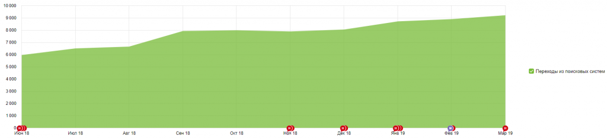
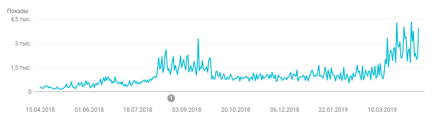
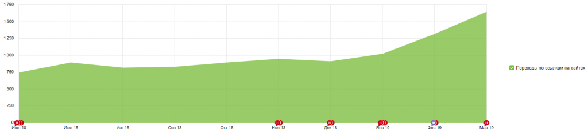
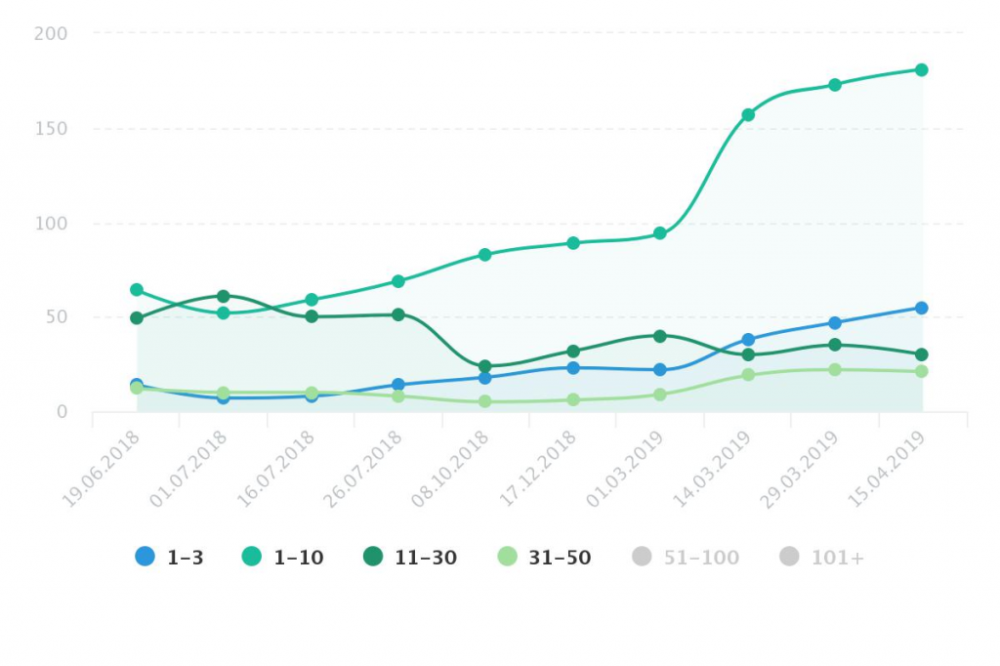
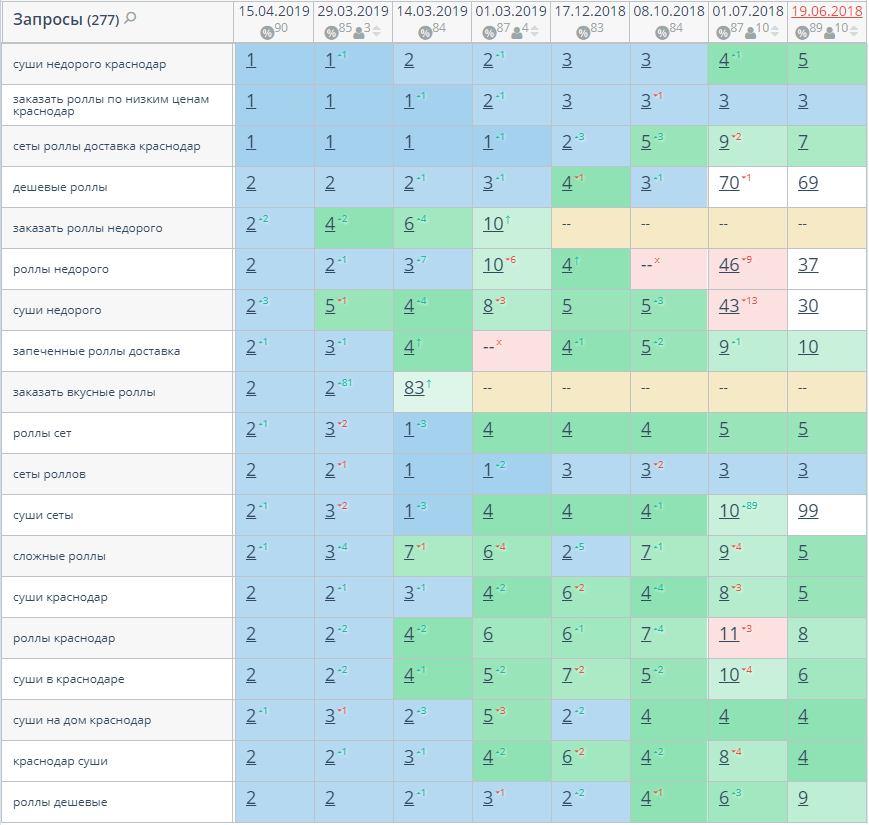

О проекте
О клиенте
Сервис по доставке «СушиФан» осуществляет доставку суши и роллов, а также блюд японской кухни на дом. Хорошо развитый бренд компании привел к тому, что очень много пользователей ищут сайт по «витальным» (брендовым) запросам.
Задачи
Привлечь на сайт как можно больше аудитории по небрендовым запросам, а также подтолкнуть пользователя к осуществлению заказа на сайте и продолжительному взаимодействию при помощи скидок и мобильного приложения.
Проведенные работы по оптимизации сайта
- Доработка корзины и оформления заказа (возможность сделать заказ максимально быстро)
- Разработка дополнительных страниц
- Интеграция с сервисом управления заказами и каталогом
- Составление семантического ядра по небрендовым запросам
- Анализ поведенческих факторов и доработки сайта, направленные на улучшение юзабилити
- Составление тегов Title и мета-тегов Description для всех страницах сайта
- Корректировка H1-H2 заголовки
- Актуализация данных в Яндекс.Справочнике
- Для всех категорий написаны уникальные тексты описания
- Размещение ссылок на сайт, на тематических и информационных сайтах
- Исправлены проблемы с индексацией сайта
- Отслеживается функционал и работоспособность сайта
Динамика посещаемости и эффективность продвижения
Увеличение количества переходов из поисковых систем (согласно данным Яндекс.Метрики) в 1,5 раза:

Увеличение числа показов сайта в поисковой выдаче по данным Google Search Console в 2,5-3 раза:

Увеличение количества переходов с других сайтов более чем в 2 раза:

Динамика тематических поисковых запросов в поисковой системе Google

Примеры поисковых запросов в топ 1-3 поисковой системы Google:

Заключение
Дальнейшая работа по сайту направлена на повышение удобства пользования сайтом, наращивание ссылочного профиля, а также видимости сайта в поисковых системах. Проводится регулярная проверка уникальности текстов, корректировка мета-тегов и отслеживание работоспособности сайта. Формируются задачи по улучшению сайта. Продолжение этой истории читайте в следующей статье: https://nuts-agency.ru/projects/seo/prodvizhenie-sayta-po-dostavke-sushi-v-krasnodare-chast-2/